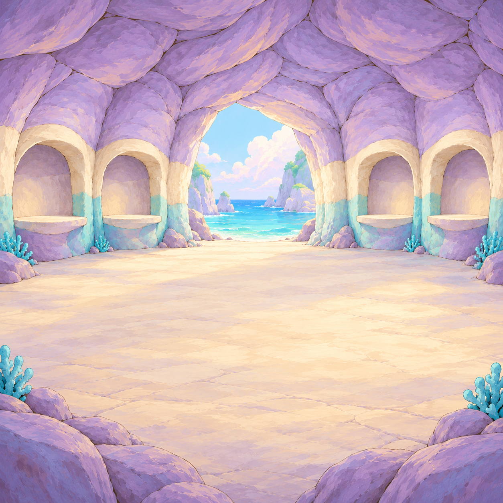
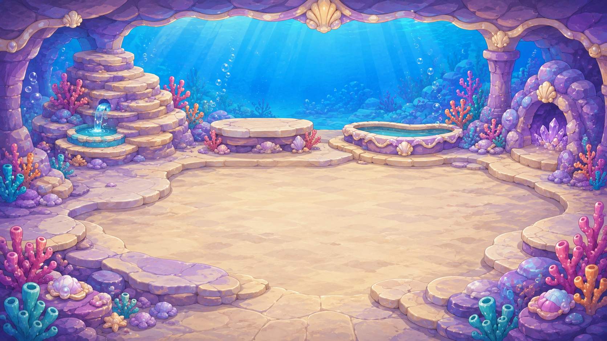
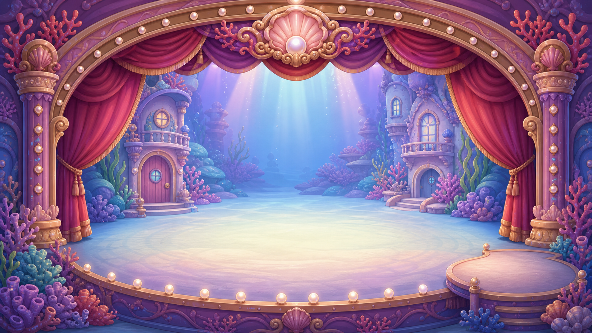

Geology grotto: native-resolution attempt 1
Reference only. The prompt requested a genuinely native 2048×2048 background; the returned image is 1254×1254. This attempt fails the resolution gate. Existing live room 2.8 is unchanged. Whole source style 4.5 provisional does not grant runtime readiness.

Complete native returned image, exact bytes preserved. No padded/upscaled derivative.Generation and hashes · Exact prompt · Nine individual source evaluations · Inventory and gap
Whole square master · 4.5/5 source
The welcoming lavender/aqua grotto, broad pale floor and four empty alcoves retain the existing setting and leave live objects separate. The surplus ceiling/floor frames the central play window. Painted source style is provisionally 4.5, with more small rock planes in the ceiling than ideal. Native 1254-square fails the mandatory 2048-square resolution gate; this is reference-only, not a runtime replacement.
Central sea opening · 4.6/5 source
A single clear sky-to-turquoise-sea opening provides a calm central landmark. Soft clouds and broad water bands remain subordinate to foreground actors. No live crystal, fossil or work object is baked into this opening.
Left outer empty alcove · 4.6/5 source
Rounded lavender cavity, cream arch and simple supporting shelf are child-readable and high-key. The empty recess can receive a separate existing work object without duplicating painted gameplay props.
Left inner empty alcove · 4.6/5 source
The cream arch and aqua lower stone separate this empty recess from the distant central opening. Rounded shelf contact has a visible lavender shadow and follows the room palette.
Right inner empty alcove · 4.6/5 source
The separate empty recess and rounded cream support mirror the room grammar without identical mechanical repeated marks. Its pale interior keeps future colored work props readable.
Right outer empty alcove · 4.6/5 source
The outer niche preserves the rounded warm rim and cool lavender cavity. The source does not bake in the interactive geode, so the selected authored geode can remain one object.
Unobstructed floor · 4.6/5 source
Broad pale warm stone/sand values provide figure-ground separation for small bright characters. The central floor is free of stools, islands, tables, trays and crystals; actor/support contact still requires real mounted review.
Rock ceiling · 4.4/5 source
Numerous small faceted painted patches add more texture than the broad-mass design rule prefers. Much lies outside the intended central 16:9 play window, but the full master still contains this density. Do not infer a live defect from the unused upper region; mounted framing remains untested.
Outer coral and stone framing · 4.5/5 source
Sparse aqua coral and lavender corner rock frame the empty floor. The lowest stone triangles are outside most of the central play window. Isolated source framing reaches the floor provisionally; phone presentation and occlusion are unreviewed.
Existing appearance and reuse inventory
 assets_src/imagegen/geologist_painted_rebuild_v 1_20261001/grotto/attempt_01/native.png · [1672, 941]
assets_src/imagegen/geologist_painted_rebuild_v 1_20261001/grotto/attempt_01/native.png · [1672, 941]
assets_src/geologist_rebuild_2026-09-05/geology_grotto_candidate.png · [1672, 941]
assets_src/imagegen/opera_codex_2026-08-02/native/opera_stage_finale_master_native.png · [1672, 941]